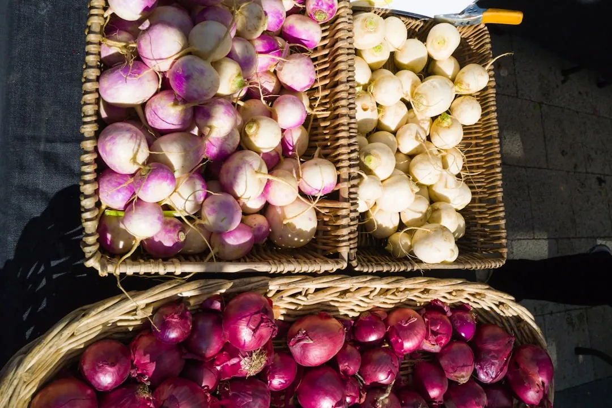

Food and wineries near California golf courses
· By GoldenPath Guide Editorial Team
Golf trips run on food as much as fairways, and California pairs its courses with some of the best eating in America. Monterey serves seafood within sight of the courses, San Diego mixes beach tacos with serious dining rooms, and Palm Springs does long resort dinners after desert rounds. Add the wine regions sitting next to each golf base and the 19th hole extends into the evening.
Eat near where you sleep. Post-round hunger plus California traffic punishes anyone who drives an hour for dinner. The picks below stay within 30 minutes of the main golf bases, with wine regions mapped the same way.
Monterey Peninsula: seafood and Carmel wine rooms
Cannery Row in Monterey holds the classic post-round seafood row, about 15 minutes from Pebble Beach and Spyglass Hill. Clam chowder in a sourdough bowl, grilled sanddabs, and Monterey calamari anchor the menus, and the bay views cost nothing extra. Carmel-by-the-Sea, 10 minutes south, runs smaller and pricier, with cottage dining rooms on Ocean Avenue that book out on summer weekends.
The Monterey wine region sits inland in Carmel Valley, roughly 25 minutes from the coast courses. More than 20 tasting rooms pour local chardonnay and pinot noir, and Carmel Valley Village concentrates several within walking distance. Reservations are standard on weekends and wise on weekdays. Our Napa vs Sonoma guide covers the bigger wine regions for trips that extend north.
- Lunch after a morning round works best in Monterey proper, since courses release golfers around 1 to 2 p.m.
- Dinner belongs in Carmel or Pacific Grove, both quieter and closer to Peninsula lodging.
- Carmel Valley tasting rooms generally close by 5 or 6 p.m., so schedule wine before dinner, not after. A tasting flight of four to five pours counts as real drinking on an empty post-golf stomach, so eat lunch first and pace the pours. Most rooms spit or share freely without judgment, and sharing one flight between two people is common for golfers watching the next morning tee time.
- Designate a driver or use a car service for any tasting afternoon; rural valley roads have no lighting.
San Diego: tacos, Gaslamp, and Temecula wine
La Jolla around Torrey Pines does fresh fish tacos, beach-cafe breakfasts, and sunset terraces within 10 minutes of the course. Downtown Gaslamp Quarter, about 25 minutes south, holds the high-end steak and seafood rooms for the trip celebration dinner. Convoy Street in Kearny Mesa serves the serious Asian food, roughly 20 minutes from Torrey Pines, and late-night hours suit golfers who played twilight.

Temecula Valley wine country sits about 60 to 75 minutes north of San Diego, with more than 40 wineries pouring in a compact valley. It fits a rest day, not a golf day: leave by 9 a.m., taste through the afternoon, and return by evening. Weekend crowds are heavy, so weekday visits taste more and wait less. Our Temecula guide maps the valley in full.
Palm Springs: resort dinners and desert Mexican
La Quinta and Palm Desert dining clusters around resort corridors, with most restaurants inside 15 minutes of PGA West. Date shakes, desert Mexican plates, and long steakhouse dinners define the local menu, and resort restaurants expect golf attire one step above course wear. El Paseo in Palm Desert concentrates the shopping-district restaurants in a single walkable strip.
Wine near the desert means driving. Temecula sits about 60 minutes west of Palm Springs, workable as a rest-day trip in cooler months. Summer heat makes daytime tasting uncomfortable, so desert trips from June through September should keep wine plans indoors or skip them. Evenings belong on patios once temperatures drop after sunset, which even in summer brings real relief.
Santa Cruz and the Santa Cruz Mountains
Pasatiempo golfers eat in Santa Cruz, about 10 minutes downhill from the course. The wharf area does clam chowder and fish and chips, downtown does the broader restaurant row, and the Boardwalk area stays casual and family-friendly. Santa Cruz Mountain wineries hide in the hills along Highway 9 and the Summit Road area, with small-lot pinot noir and chardonnay as the local signature.
These mountain tasting rooms run smaller and quieter than Napa, often by appointment, and several close on weekdays. Call ahead the day before rather than trusting posted hours. Pair a morning round at Pasatiempo with an afternoon tasting and the day balances exertion with rest.
How to schedule food and wine around golf
- Keep dinners within 30 minutes of lodging on golf days, and save long drives for rest days.
- Book tasting rooms 1 to 2 weeks ahead for weekends, 2 to 3 days ahead for weekdays.
- Put winery visits on rest days or replay afternoons, never before a morning anchor round.
- Reserve one celebration dinner at the trip start, since prime tables vanish by mid-trip.
- Carry water and snacks in the rental car, because rural wine roads have few stops.
Good golf plus good food is the whole trip. Plan both with the same care and neither disappoints.